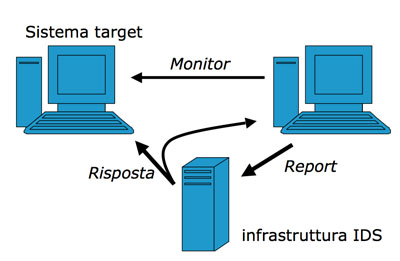
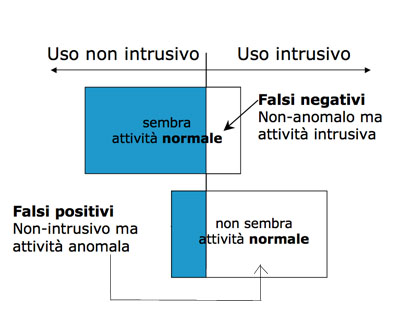

Torna alla pagina di Elementi di sicurezza e privatezza
:: Audit e controllo delle intrusioni ::
Audit di sicurezza
Gli audit di sicurezza vengono adottati per due tipologie di eccezioni:
- Analizzare tutte le politiche e pratiche che sono state utilizzate per valutare i rischi creati da queste azioni;
- Analizzare tutti quei processi che hanno come obiettivo di determinare se ci sono stati problemi relativi alla sicurezza.
Per questi tipi di audit vi sono diverse aree di intervento:
- Sicurezza organizzativa: verifica delle responsabilità e politiche aziendali;
- Sicurezza logica e fisica:
- valutazione della protezione per quanto riguarda accessi non autorizzati;
- valutazione della protezione da eventi di natura umana o ambientale (contro catastrofi naturali);
- valutazione protezione dell'infrastruttura della rete;
- valutazione di server e client.
- Sicurezza delle applicazioni:verifica delle protezioni per i sistemi applicativi contro rischi di tipo intrinseco e implementativi.
Bisogna effettuare anche un'attenta analisi dei rischi a cui si è soggetti e dunque bisogna stendere una serie di punti necessari per evitare tali rischi:
- Meccanismi per tenere sotto controllo tutti i possibili rischi;
- Valutazione della probabilità per ogni determinato rischio;
- Determinare tutte le contromisure necessarie;
- Sviluppo di tali contromisure per contenere gli effetti di un rischio;
- Determinazione della gravità di ogni singolo rischio e assegnamento delle contromisure adatte.
Segue poi una fase di preparazione, che serve a stabilire a che livello si applicherà l'audit di sicurezza. I possibili livelli sono di host, di server, di firewall o di rete. Occore poi una stesura di un report dove vengono raccolte diverse informazioni relative agli audit, tali informazioni dovranno poi essere conservate in modo sicuro. In tale report poi vanno conservati i risultati delle diverse analisi sul sistema che potranno essere confrontati con report precendenti per valutare il grado si sicurezza; successivamente si stila una lista di possibili problemi e contromisure adottate.
Una componente fondamentale nell'ambito dell'auditing è l'analisi delle storia degli eventi, utile per determinare come e quando si sono svolte possibili violazioni alla sicurezza. Per poter garantire l'analisi di tali informazioni dobbiamo garantire la presenza di tutte le richieste di accesso effettuate dagli utenti e di tutte le loro attività svolte. Queste informazioni dovranno dunque essere mantenute in un file di log, il cui formato può cambiare da sistema a sistema.
Le informazioni che devono essere presenti all'interno del log per poter effettuare l'analisi sono:
- Soggetto,colui che effettua le richieste di accesso;
- Oggetto richiesto dal soggetto;
- Operazione che il soggetto vorrà compiere su un determinato oggetto;
- Tempo, ovvero quando la richiesta è stata effettuata;
- Locazione, ovvero il luogo da dove proviene la richiesta;
- Rispostadel sistema del controllo dell'accesso;
- Quantità risorse impiegate dal sistema;
- Esisto dell'operazione e se negata spiegare il motivo.
Da notare che tutte queste informazioni potrebbero essere spezzate su più log.
L'analisi di un audit log potrebbe diventare un'operazione molto lunga per diversi motivi: i dati di audit potrebbero non rivelare tutte le violazioni possibili, l'attacante potrebbe compiere una violazione su un periodo di tempo molto lungo oppure l'analisi dell'audit potrebbe essere eseguita solo se ci sono effetti visibili (memoria insufficiente, processi rallentati, file non accessibili, ecc). Occorono dunque dei tool che eseguano delle analisi automatiche. Lo scopo di questi tool è proprio automatizzare la fase di acquisizione dei log file e stilare, in un secondo momento, un report da presentare all'utente, sarà quest'ultimo a stabilire se vi è stata una violazione oppure no.
Intrusion Detection System (IDS)
Questo sistema non intende sostituire i normali controlli, ma cerca di scoprire i loro i fallimenti (è dunque una combinazione fra sistemi base e i tool visti prima). Generalmente chi entra abusivamente in un sistema compie delle operazioni che un utente normale non effettuerebbe e i loro attacchi spesso (ma non sempre) sono rivolti ai sistemi di controllo dell'accesso.

Questo è un esempio semplice dell'impiego di un IDS, egli monitora il sistema di cui bisogna garantire la sicurezza e restituisce report che sarà analizzato dall'amministratore. Affinchè il sistema funzioni, dunque che sia garantita la sicurezza, l'IDS dove possedere diverse proprietà:
- Deve poter essere eseguito senza la supervisione umana, dunque i sistemi IDS non devono essere accessibili dagli utenti;
- Il suo funzionamento interno dovrebbe essere analizzato dall'esterno dagli amministratori;
- Deve essere resistente ai guasti;
- Deve richiedere un minimo di overhead;
- Deve essere facilmente adattabile alle esigenze del sistema da monitorare (Es: quando si cambiano i comportamenti di sistemi o di configurazione della rete);
- Deve far fronte ai cambiamenti del sistema che stava monitorando.
Gli IDS si possono classificare in due categorie per i metodi utilizzati:
- Anomaly detection:verificano le possibili intrusioni con conoscenze a posteriori, ovvero ogni utente possiede un profilo dove sono memorizzate le operazioni che generalmente compie. Si riscontra un'anomalia e dunque una possibile intrusione quando un utente compie delle operazioni non abituali (magari effettuate da un intruso con l'identità dell'utente in questione). Questi tipi di IDS sono in grado di riconoscere nuovi tipi di attacco. Lo svantaggio principale degli Anomaly detection è che in alcuni casi la creazione di profili non è banale, in quanto bisogna anche scegliere che tipo azioni bisogna misurare per poi riscontrare azioni anomale.
- Misuse detection:confronta gli eventi con degli schemi predefiniti di attacco, se riscontra delle operazioni che corrispondono a violazioni emette un particolare avviso. Conoscenza a priori. I problemi principali del Misuse detection è che bisgona gestire la conoscenza degli attacchi che si vogliono inserire negli schemi, dunque problemi legati a queste attività possono essere anche l'aggiornamento degli attacchi conosciuti. Un altro problema è che una descrizione potrebbe corrispondere a più attacchi.
Gli IDS si possono classificare anche per Host-based, se opera su una singola macchina (sono dunque dedicati in quando monitora una sola macchina alla volta) e Network-based che controllano tutto il traffico di rete. Da notare che questi tipi di IDS sono ortogonali fra loro, ovvero possono essere usati in combinazione.
Gli host-based (HIDS) sono in grado di riscontrare la presenza di eventuali rootkit (ovvero la presenza di dispositivi che compromettono la macchina in questione). Lo svantaggio principale degli host-based è che si necessiterbbe di un IDS per ogni macchina, in quanto non ne disponiamo di uno distribuito. Un altro svantaggio potrebbe essere quello che se un attaccante entra in possesso di una macchina potrebbe modificare l'IDS e il suo relativo file di log. Un ultimo svantaggio è che proprio per il fatto che abbiamo un IDS dedicato (su una singola macchina) si ha una visione locale dell'attacco, dunque non si tiene conto di ciò che accade nella rete.
I Network-IDS (NIDS) invece, proprio per il fatto che lavorano a livello di rete, cercano eventuali violazioni a livello di rete, di pattern di connessione inusuali o di stringhe di attacco dei payload dei pacchetti. Gli svantaggi principali di un NIDS sono che non possono controllare traffico di rete crittato (es il VPN), non tutti gli attacchi provengono dalla rete e che memorizza ed elabora una grande quantità di traffico.
Anomaly vs Misuse

Come si può vedere dall'immagine esistono casi che in cui si riscontrano Falsi Negativi, ovvero casi in cui un'analisi intrusiva non riscontra la presenza di un attaccante. Questi casi sono ovviamente più pericolosi dei Falsi Positivi, casi in cui l'analisi potrebbe riscontrare la presenza di un intruso, che in realtà non c'è. Nei Falsi Positivi si hanno comunque delle conseguenze non desiderate, come interruzioni dei servizi che non sono necessarie, ma che comunque sono migliori delle conseguenze che si avrebbero nei Falsi Negativi dove a nostra insaputa è presente un attaccante nel sistema.